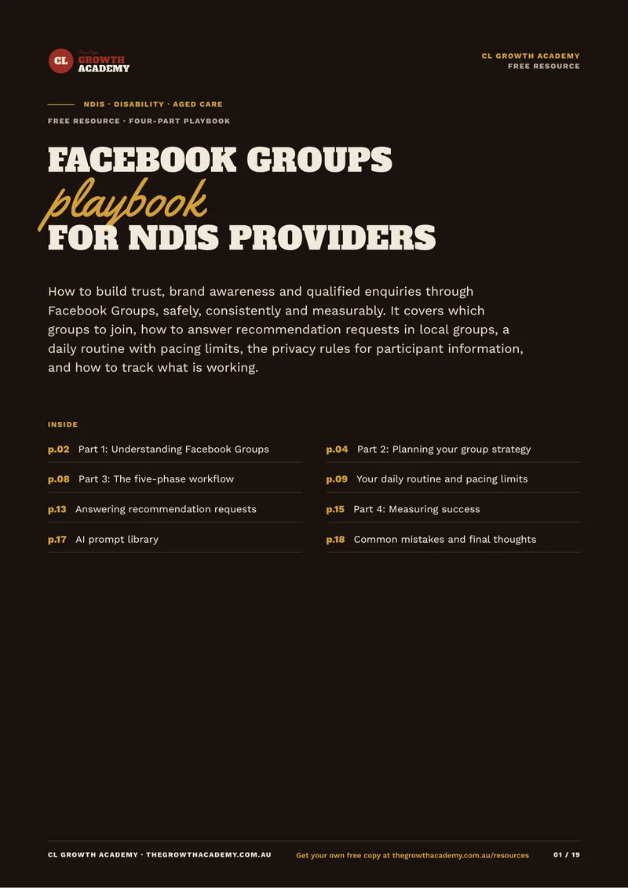

Facebook Groups Marketing for NDIS Providers: Posting and Engaging Playbook
The Facebook Groups Playbook shows NDIS providers how to post and engage in Facebook Groups to build trust and win enquiries. It covers which groups to join, a daily routine with pacing limits, how to answer recommendation requests in local groups, the privacy rules for participant information, and how to track what works.

Why do Facebook Groups work for NDIS providers?
Because families often ask their community for a recommendation before they contact a provider. In a group you join a conversation someone else started rather than interrupting their feed. Members ask for recommendations, share experiences and look for local services, and every helpful reply adds to your name in that community.
My view on channels: "I wouldn't write anything off as a channel." The people in local Facebook groups are the ones "saying, have you seen this local business? They're really great. We should support them."
What are the privacy rules for posting in groups?
Members often share personal or health details in public posts. Everyone who posts for your business follows these rules:
- Never quote, screenshot or repeat a member's personal or health details in a reply.
- Never post any details about a current or past participant in a group, even without their name.
- Share a participant's photo, name or story only with their written consent, and only when that consent covers social media. If you are not sure it does, don't post it.
- Never give clinical or diagnostic opinions.
- Never ask about someone's NDIS plan or funding in public.
- Never say or imply you are "NDIS approved", and keep every claim in line with the NDIS Code of Conduct: honest, accurate and free of pressure.
- Never paste a member's name or details into an AI tool. Remove them first.
If you are unsure whether a reply crosses into clinical or regulated advice, post a warm, general reply that invites them to message the Page, and escalate.
Should I use a Facebook Group or my business Page?
Short answer: use both, for different jobs. Your business Page is where you publish, and each post sits in a feed until the next one replaces it. A group is where people ask for recommendations, and the same helpful names come up again and again. Join groups as your Page where the group allows it.
| Your business Page | A Facebook Group | |
|---|---|---|
| How it works | You publish a post, it gets shared, then the next one replaces it | Members ask, answer and recommend, and the same names come up again and again |
| Where your post sits | In feeds full of promotional content | Inside a conversation someone else started |
| Messaging | Your Page can message someone only after they have interacted with it | Your public reply invites members to message your Page |
Pages can only request to join groups, and some groups only allow personal profiles. If you join with a personal profile, say clearly what your role is and follow the same engagement rules.
Which Facebook Groups should I join?
A short list of active groups where the people you support spend time, and where businesses are allowed to take part. Check whether each group is active, whether members ask for recommendations, whether the audience matches, whether posts need admin approval, and whether it covers your service area. Then record its type.
| Group type | What it is for | Best approach |
|---|---|---|
| Referral groups | Members ask for recommendations or providers | Watch for requests and reply quickly with a personalised answer |
| Community groups | Local discussion, events and recommendations | Join conversations and share educational content where the rules allow |
| Support groups | Peer support and shared experiences | Offer encouragement only, never clinical advice, keep your business in the background |
| Professional groups | Business networking and industry discussion | Share insights and build relationships |
Recommendation requests turn up most in suburb and town groups, local parents groups, noticeboard groups, disability parent and carer groups and NDIS community groups.
What should I check before posting? Check the group rules first
Every group has its own rules, set by its admins, and some groups do not allow marketing at all. Group admins can set up to 10 rules, and in public groups they can require approval before you post or comment for the first time. Before you post or comment in a group:
- Read the group rules.
- Understand the promotional guidelines.
- Check whether external links are allowed.
- Check whether posts need admin approval.
- Respect any posting frequency limits.
- Watch how members usually interact.
If a post is declined or removed, find out why and update your tracker so you do not repeat it. Over time, declined posts show you which groups welcome your business and which are better for community engagement only.
What does a daily Facebook Groups routine look like?
The same routine every working day, run by one named person with someone to escalate to.
| When | What to do |
|---|---|
| Morning | Check priority referral groups for new recommendation requests and reply. Reply to overnight comments on your posts. |
| Through the day | Share approved content in small batches. Leave meaningful comments in community discussions. |
| One hour, blocked out | Search groups by keyword for service requests. |
| Afternoon | Check priority referral groups again and reply to anything new. |
| End of day | Update the tracker: posts shared, approvals, declines, comments, opportunities and enquiries. |
The pacing limits the playbook recommends: share into no more than 8 to 10 groups a day for each Page or profile, leave at least 10 meaningful comments a day, and reply to recommendation requests within 3 to 4 business hours. Meta does not publish a safe number of group shares, so treat the share limit as a ceiling. Rewrite the caption for each group so no two groups get identical text.
How do I answer a recommendation request?
Short, specific to the post and easy to act on. Build every reply from four parts:
- Speak to the person by first name, and refer to what they asked for, never the personal details they shared.
- Say plainly whether you offer what they need, and in which area.
- Give one true, specific detail about how you work.
- Invite them to message your Page. A Business Page can't message someone first, so the public reply has to open the door.
The example reply from the playbook:
"Hi [first name], we support people in [suburb or area] with [the support they asked about]. [One true, specific detail about how you work.] Feel free to send us a message and we can chat through what you're looking for."
If another provider has already replied, add yours anyway if your service fits. Keep the focus on what you offer, and never comment on the other replies.
How do I know if it's working?
The playbook's metrics, each with what it tells you:
- Groups joined: your community reach.
- Active groups: where you engage consistently.
- Posts shared: how widely your content is distributed.
- Post approval rate: which groups welcome your content.
- Comments replied to: how responsive you are.
- Community comments: participation beyond your own posts.
- Service opportunities found: recommendation and referral requests spotted.
- Time to first response: how often you reply before someone else wins the recommendation.
- Enquiries generated: direct interest in your services.
- Qualified enquiries: enquiries that fit your services and area.
- New clients, where measurable: business impact.
Keep a tracker with every group, its type, its rules and one objective tag: Referrals, Awareness, Partnerships or Client Support. Judge each group on its own objective. Each month, work out a simple health score for each group, approvals plus engagements plus opportunities found, divided by hours invested, and rank them. Move any group with no results in 60 days to a "monitor only" list.
Signs beyond the numbers: members tagging your business in other people's recommendation requests, your name recognised in local groups, and more private messages.
What else is in the playbook?
- How to set objectives and choose your audience before you post.
- When to join as your Business Page and when to use a personal profile.
- A library of lines that invite people to message your Page.
- The five-phase workflow, with an escalation timer and a holding reply for sensitive questions.
- How to stop duplicate comments when several people post for you.
- The tracker fields and the metrics to report weekly and monthly.
- An AI prompt library, including a prompt that checks a reply for privacy and compliance problems before it goes live.
- Common mistakes to avoid.
Groups are one part of your social media. If you want help with the rest, see how I help with NDIS social media.
Who is the playbook for?
Owners, marketing coordinators, admin staff and virtual assistants who post and reply in Facebook Groups for an NDIS, disability or aged care provider. Give it to whoever runs your groups each day, and make sure they read the privacy rules first.
Get the Facebook Groups Playbook free
You get the 19-page playbook as a PDF, plus every other resource in the library.
FAQ
Is this about Facebook ads?
No. It is about posting and engaging in Facebook Groups: joining the right groups, replying to people and sharing useful content. It costs time and no ad spend.
How many groups should I post in each day?
The playbook recommends no more than 8 to 10 groups a day for each Page or profile, spread across the day, with the caption rewritten for each group. Posting the same thing into lots of groups at once can get a Page rate-limited or flagged.
Can I share client stories in Facebook Groups?
Only with the person's written consent, and only when that consent covers social media. Never post details about a current or past participant, even without their name.
How do I advertise my NDIS business?
Start with what people can check: say what you offer, where, and one true, specific detail about how you work, then make it easy to message you. In every ad, post and group reply, keep to the NDIS Code of Conduct and act with integrity, honesty and transparency. Never describe your service as "NDIS approved" or use the NDIS logo without the NDIA's written consent. Only registered NDIS providers may use the "I/we heart NDIS" or "I/we support NDIS" logos with the "Registered Provider" tagline, or call themselves registered. Ask about needs on enquiry forms, never funding or plan budgets, and share a participant's story only with their written consent.
Can a virtual assistant run our groups?
Yes, for general conversation and sharing approved content. Clinical, legal and pricing questions go to a named person within 2 hours of being flagged, with a holding reply posted by the end of that day if the answer isn't ready.
Can you help us set it up?
Yes. Book a free growth audit and I'll look at where your people spend time online and help you choose the first groups to focus on.
Sources
Public sources this page relies on, each checked 15 November 2026:
- Facebook Help Center, Join a Facebook group (Pages can only request to join groups): https://www.facebook.com/help/103763583048280 (opens in a new tab)
- Facebook Help Center, Post in a Facebook group (admins might require approval before you post or comment): https://www.facebook.com/help/232426073439303 (opens in a new tab)
- Facebook Help Center, Add, edit or delete rules for a Facebook group you admin (up to 10 group rules): https://www.facebook.com/help/462230500886400 (opens in a new tab)
- NDIS Quality and Safeguards Commission, NDIS Code of Conduct: https://www.ndiscommission.gov.au/rules-and-standards/ndis-code-conduct (opens in a new tab)
- NDIA, NDIS logo guidelines: https://www.ndis.gov.au/contact/feedback-and-enquiries/ndis-logo-guidelines (opens in a new tab)
Want help building your group presence?
Book a free growth audit. I'll go through your business with you and pick the first three moves, then you decide whether you want help running them.